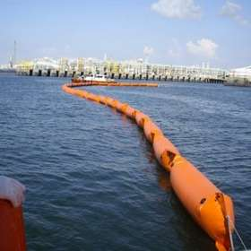

Barreras Flotantes Para Contención
Especificaciones Técnicas
- Fabricada con Lona de Poliéster recubierta de PVC.
- Calibre 24 (24 Onzas por yarda cuadrada de peso).
- Diámetro de flotación de 8 pulgadas.
- Faldón subacuático de 16 pulgadas.
- Relleno de Polietileno espumado para el flotador.
- Elemento de tensión superior de acero galvanizado y tensión inferior (Lastre).
- Cadena 5/16 Pulgada de acero galvanizado.
- Conectores de acero inoxidable en cada extremo de los tramos de 15 metros de longitud.
- Ojillada para fijación.
Barrera Contención de Solidos en Suspención
Barrera de Contención Ecológica
Barrera de Contención
En Playa

Barrera de Contención
Barrera de Contención
Barreras Permanentes
Especificaciones Técnicas
- Fabricada con Malla de Poliéster recubierta de PVC.
- Calibre: 3 mm. Espesor.
- Dimensiones del Flotador 8” x 16”.
- Faldón subacuático de 12 pulgadas.
- Relleno del Flotador: Poliuretano espumado de celda cerrada.
- Material de la coraza del flotador: Polietileno de alta densidad (PEAD).
- Resistencia al ambiente marino y rayos ultra violeta (UV).
- Ojillos bajo cada par de flotadores para fijación o contrapeso.
- Conectores de acero inoxidable en cada extremo de los tramos de 15 metros de longitud.
Barco con Barrera Permanente
Barrera Permanente
Con Cortina
Barrera
Permanente
Barreras Contenedoras
Barrera Antisargazo
Barrera Autoinflable
